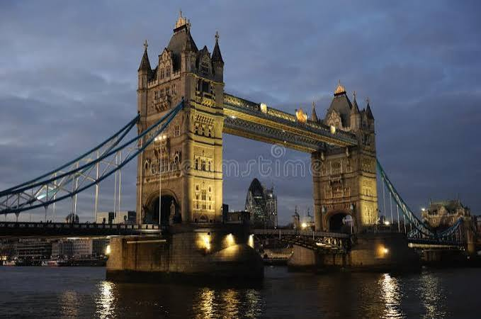
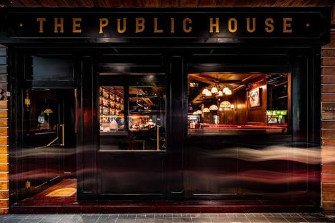

Historic castles, cobblestone alleys, and vibrant cityscapes. Discover the timeless charm of Britain.
The United Kingdom is a tapestry woven from centuries of stories. From the iconic red double-decker buses crossing the River Thames to grand Gothic architecture standing proud under grey skies, every street holds a legend.
What makes Britain captivating is its effortless blend of historic majesty and contemporary culture. Royal palaces sit alongside cutting-edge art galleries and bustling markets.
"When a man is tired of London, he is tired of life."
Step beyond the vibrant pulse of London to explore the peaceful villages of the Cotswolds and the rugged Highlands of Scotland. Honey-colored stone cottages, rolling green hills, and quiet streams offer a tranquil escape.
Take an afternoon tea at a local pub, wander around medieval ruins, and enjoy the slow pace of rural British life.
In these quiet hamlets, time seems to stand still, allowing you to appreciate the subtle beauty of nature.
Move your mouse over each photograph to reveal the story behind the image.


Hover or focus over a photo to see the fade-in overlay effect.